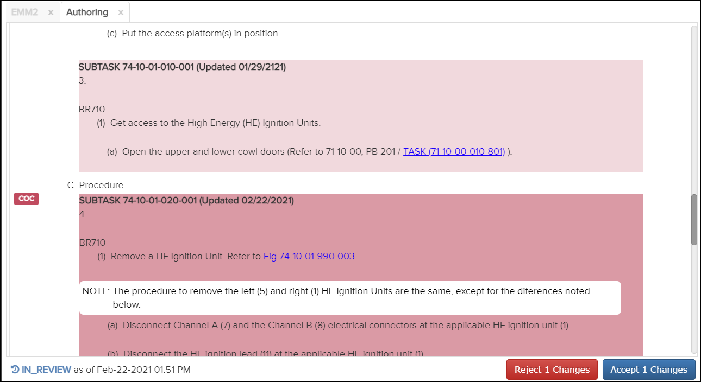

Not applicable for Pinpoint Standalone Light.
To review changes, do these steps:
-
Click
 in the far right column for the
document you want to review.
The selected document opens in the Content pane. In this example, the dark pink section shows the new content to be reviewed while the light pink section is pre-existing approved content:
in the far right column for the
document you want to review.
The selected document opens in the Content pane. In this example, the dark pink section shows the new content to be reviewed while the light pink section is pre-existing approved content:
Authoring Tab - Review Content
Note: The number that displays on the Reject Changes and Accept Changes buttons indicates the number of changed sections, figures, or sheets.